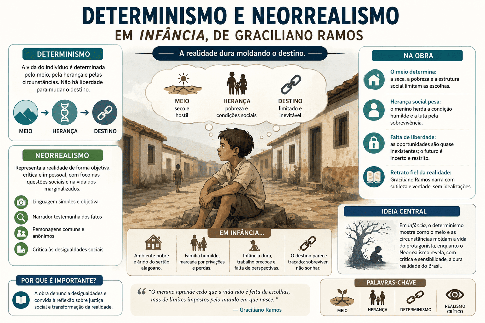

O Determinismo e o Neorrealismo na Obra Infância de Graciliano Ramos
Infância é uma das obras mais expressivas da literatura memorialística brasileira e reflete as raízes do autor no interior de Alagoas e Pernambuco. Publicada originalmente em 1945, a coletânea reconstrói os primeiros anos de vida do menino Graciliano, revelando as engrenagens da formação de sua personalidade e os traços mais marcantes do contexto histórico e literário da Segunda Geração Modernista.
A obra combina a observação do espaço rural nordestino, a análise do comportamento humano, a denúncia das desigualdades sociais e a revelação de um lar marcado pela opressão. Em vez de apresentar uma infância idealizada, constrói uma narrativa seca e angustiante, onde o determinismo atua de forma implacável: o meio agreste (a seca, o sertão) e a violência (física e psicológica) moldam a mente e o corpo do protagonista.
Neste conteúdo, você entenderá a fundo o que significam os conceitos de Determinismo e Neorrealismo, como eles estruturam a obra de Graciliano Ramos e como esses temas conectam Literatura, História e Sociologia no PAES UEMA. Ao final, teste seus conhecimentos em um quiz de nível avançado.

O que é a obra Infância?
A obra apresenta uma série de memórias independentes, mas interligadas pelo desenvolvimento cronológico do autor. Cada capítulo parte de uma lembrança fragmentada — um objeto (como o vaso de pitombas ou o cinturão), um acontecimento violento, uma mudança de casa, a estiagem ou o ambiente escolar. A reunião dessas memórias permite acompanhar os costumes e a rigidez que marcaram a sociedade nordestina na virada do século XIX para o XX.
Graciliano Ramos não se limita a registrar fatos biográficos. Ele seleciona detalhes, disseca o comportamento autoritário de seus pais e professores, introduz o medo como elemento central de sua formação e transforma o sofrimento individual em uma reflexão profunda sobre o abuso de poder, a exploração do trabalhador e o peso esmagador do ambiente.
Classificação da obra
- Autor: Graciliano Ramos.
- Gênero predominante: Memórias (autobiografia literária).
- Escola Literária: Segunda Geração Modernista (Neorrealismo Regionalista).
- Recorte temporal: Final do século XIX e início do século XX.
- Espaço recorrente: Interior de Alagoas (Viçosa) e Pernambuco (Buíque).
- Foco narrativo: Primeira pessoa (narrador-personagem com visão retrospectiva).
- Estrutura: Capítulos autônomos que funcionam como contos memorialísticos.
- Características marcantes: Determinismo social, pessimismo, análise psicológica, concisão.
Não confunda memória com ficção pura
Infância não é um romance estritamente ficcional como Vidas Secas ou São Bernardo, mas sim uma obra enraizada na autobiografia. No entanto, a organização estética, o rigor literário e a seleção impiedosa das lembranças conferem ao texto um valor de arte universal, afastando-o de um simples diário pessoal.
Entendendo os Conceitos: Determinismo e Neorrealismo
Para dominar as questões do PAES UEMA, é fundamental compreender a diferença entre esses dois conceitos teóricos e observar como Graciliano Ramos os aplica magistralmente na construção de suas memórias.
O que é o Determinismo na Literatura?
Na teoria literária e sociológica, o determinismo é a corrente de pensamento (popularizada no século XIX pelo Naturalismo) que defende que o ser humano não possui livre-arbítrio absoluto. Seu comportamento, sua moral e seu destino são determinados por três fatores implacáveis: o meio (espaço geográfico e social), a raça (herança biológica/genética) e o momento histórico.
O Determinismo Geográfico e Econômico em Infância
O meio agreste age como um ditador. A seca destrói as lavouras, mata o rebanho e gera a falência. Esse esgotamento material envenena o humor da família; o pai se torna ainda mais irritadiço e agressivo, transferindo a brutalidade da natureza para as relações dentro de casa.
O Determinismo Social e Psicológico em Infância
O menino é moldado (determinado) pelas forças opressoras ao seu redor. Os castigos irracionais e o desamor ensinam-no a ser passivo e covarde. O crítico Octavio de Faria aponta que o profundo pessimismo de Graciliano é um reflexo exato desse ambiente de nivelamento, asfixia e gritos contínuos.
O que é o Neorrealismo (Romance de 1930)?
O Neorrealismo (ou Regionalismo Crítico) é a grande marca da prosa da Segunda Geração Modernista. Os autores dessa fase (como Graciliano Ramos, Jorge Amado e Rachel de Queiroz) resgatam a observação objetiva do Realismo/Naturalismo, mas abandonam a visão puramente "científica" e passiva do homem. Eles usam a literatura como ferramenta de profunda denúncia social e sondagem psicológica.
Como o Neorrealismo aparece na obra? Diferente dos naturalistas do século XIX, Graciliano Ramos não usa o determinismo apenas para justificar o fracasso humano. Ele o utiliza para criticar as estruturas de poder. Em Infância, o neorrealismo atua como um bisturi que expõe a doença da sociedade brasileira:
- A falência da educação: O ensino neorrealista é mostrado como alienante. Os livros do Barão de Macaúbas impõem uma linguagem pedante e irreal, gerando náusea intelectual no menino sertanejo. As professoras (como D. Maria do Ó) usam puxões de orelha e força bruta, tornando a escola um aparelho de repressão.
- O coronelismo e a impunidade: O autor denuncia o abismo de classes. Um exemplo chocante é a prisão do velho mendigo Venta-Romba, encarcerado injustamente pelo pai de Graciliano apenas para demonstrar poder e esconder o próprio medo, um retrato perfeito da covardia das elites rurais.
- A reprodução da violência: A denúncia sociológica avança ao mostrar que a violência gera violência. Após observar o sofrimento passivo do moleque José, negro liberto espancado impiedosamente pelo patriarca, o próprio menino tenta espetar o garoto ferido com um pedaço de lenha, demonstrando como a hierarquia do abuso é internalizada e reproduzida na infância.
Principais temas da obra para os vestibulares
A força do sertão e da seca
A paisagem árida não é mero cenário bucólico, mas sim uma força motriz que afeta a economia e dita a desestruturação familiar. A perda dos bens no polígono das secas mostra a fragilidade do modelo rural nordestino.
Violência doméstica e o medo como escola
A família atua como o primeiro Estado repressor. O menino sofre torturas físicas e emocionais inesquecíveis, como a angustiante busca pelo cinturão perdido do pai, onde as perguntas são repetidas como marteladas em seu cérebro infantil, suprimindo sua voz e sua reação. A mãe contribui para essa anulação utilizando apelidos humilhantes (como "bezerro-encourado" e "cabra-cega") que reduzem o filho a um estorvo animalizado.
A fuga e o fanatismo religioso
Para escapar de uma realidade dolorosa, o menino busca os livros. A literatura clandestina (como folhetins de capa amarela) atua como libertação. Contudo, a religião impõe suas amarras: a leitura de "O Menino da Mata e o seu Cão Piloto" é censurada pela prima por ser considerada "pecado" e obra do diabo. O fanatismo também cobra seu preço letal no trágico episódio em que uma negra morre carbonizada tentando salvar a litografia de uma santa.
Vozes e figuras importantes
- O menino Graciliano: Oprimido, atento e repleto de dúvidas. É a lente que capta a brutalidade e transforma a perplexidade infantil em matéria de crítica literária adulta.
- A Mãe e o Pai: Enxergados sob o peso de um patriarcado duro e ignorante. Oscilam entre o silêncio austero e a agressão explosiva.
- Os caboclos, ex-escravos e mendigos: Figuras marginalizadas (Venta-Romba, moleque José, Amaro) que representam a camada mais baixa e indefesa da organização coronelista, sobre a qual desaba o ódio e a frustração das classes superiores.
- Mocinha e Adelaide: Retratam a opressão feminina. Mocinha é a irmã natural trancada por uma moralidade hipócrita; Adelaide é a prima humilhada e tratada como serva dentro do ambiente escolar, mostrando que os papéis de opressão persistem em todas as esferas.
Estratégia de leitura para a Prova
Sempre que a prova abordar Infância, procure o nexo causal sociológico. Graciliano prova que a maldade, o complexo de inferioridade e o pessimismo não nascem do nada; eles são frutos deterministas de um meio social adoecido, estratificado e desprovido de afetividade.
Quiz sobre Infância, Determinismo e Neorrealismo
Quiz — Infância para o PAES UEMA (nível avançado)
Questão 1 — No tocante à teoria do determinismo aplicada na obra Infância, assinale a alternativa que explica corretamente como o meio influencia o protagonista:
Questão 2 — No episódio do interrogatório sobre o "cinturão", o pai atua como um inquisidor brutal. No contexto do neorrealismo literário da década de 1930, essa cena é estruturada para denunciar:
Questão 3 — Durante o longo período em que sofreu de doença nos olhos ("Cegueira"), a mãe o apelida de "bezerro-encourado" e "cabra-cega". Na formação psicológica narrada, esses apelidos atuam como:
Questão 4 — A prisão do idoso e inofensivo Venta-Romba, mandado ao cárcere pelo pai de Graciliano em um rompante de medo e covardia, tem como finalidade neorrealista:
Questão 5 — No que diz respeito ao tema da opressão pedagógica em Infância, como a rejeição ao conteúdo do "Barão de Macaúbas" pode ser explicada sociologicamente?
Questão 6 — Em uma cena marcante, o garoto tenta espetar com um pau de lenha as solas dos pés do "moleque José", enquanto este já sofria chibatadas pelo patriarca. Esse ato da criança revela:
Questão 7 — Ao retratar figuras educacionais como D. Maria do Ó, o narrador demonstra que:
Questão 8 — A censura feita pela prima ao proibi-lo de ler o folhetim "O menino da mata e o seu cão Piloto" sob o argumento de ser uma obra do "diabo" e "pecado" exemplifica na narrativa:
Questão 9 — O trágico episódio em que uma negra morre carbonizada ao mergulhar em um incêndio para resgatar uma imagem de Nossa Senhora serve como recurso literário para o autor criticar principalmente:
Questão 10 — Segundo a análise de Octavio de Faria, Graciliano Ramos não enxerga sua infância com óculos "cor-de-rosa". Sobre a relação entre a memória e a escrita em Infância, está correto o que se afirma em:
I. A estética áspera e direta do livro reflete o ambiente castrador e carente de afeto em que o autor foi moldado.
II. O determinismo naturalista de Graciliano é mecanicista, eximindo a sociedade de culpa e focando puramente nas deformidades da genética animal.
III. A dor de infância na obra modernista serve como um documento de acusação, no qual o sofrimento privado funciona como radiografia do adoecimento coletivo das relações de poder.
IV. O narrador elabora uma prosa repleta de sentimentalismo barato e vitimismo, apelando para a compaixão emocional do leitor.
Estão corretas apenas as afirmativas:
Resumo para revisão
- Infância (1945) expõe o amadurecimento doloroso e seco de Graciliano Ramos no sertão nordestino.
- O Determinismo evidencia-se na opressão incontornável do meio geográfico (seca/fome) e social (patriarcado).
- O Neorrealismo da obra alia as chagas da memória infantil à pesada crítica socio-histórica e política da década de 30.
- A figura paterna e materna exercem uma autoridade pautada no medo, na agressão gratuita e na absoluta ausência de empatia.
- A escola primária é retratada como mecanismo inútil de repressão e tortura (D. Maria do Ó e livros pedantes).
- O crítico Octavio de Faria reforça que o pessimismo gracilianense germina sucessivamente dos "choques" de rejeição recebidos.
- A partir da óptica da criança, Graciliano denuncia as engrenagens de humilhação, racismo e covardia na velha ordem do Brasil agrário.
Conclusão
Infância vai muito além do simples registro memorialístico. Trata-se de uma dissecação sociológica brilhante em que Graciliano Ramos, utilizando sua própria experiência como ponto de partida, demonstra na prática os conceitos de Determinismo e Neorrealismo. Ele documenta com precisão assustadora como a escassez material, a violência institucionalizada e o desamor destroem as possibilidades da infância.
Para dominar esse assunto nas provas, lembre-se sempre de interligar a opressão familiar sentida pelo protagonista com as macroestruturas da Primeira República: o latifúndio autoritário, a fragilidade dos excluídos e os resquícios asfixiantes da escravidão que o neorrealismo literário buscou desnudar.
Perguntas frequentes
O que significa Determinismo em Infância?
Na obra, significa que a brutalidade do meio (a miséria e a seca) e a violência da família (pais punitivos) determinam a personalidade do narrador, tornando-o uma criança cheia de temores, isolada e com pensamento pessimista sobre a vida.
Como o Neorrealismo aparece no livro?
Aparece como forma de denúncia social e psicológica intensa. Graciliano usa suas memórias duras para criticar abertamente a sociedade agrária do início do século XX, desmascarando a educação punitiva, o fanatismo religioso e a arbitrariedade coronelista.
O que representa o episódio do mendigo Venta-Romba?
A prisão imotivada de um idoso em andrajos escancara a impunidade e o covarde abuso de poder. Demonstra que os "superiores" descarregavam suas frustrações invariavelmente sobre as classes marginalizadas que não tinham chance de defesa.
Como a figura da mãe contribui para o pessimismo de Graciliano?
A mãe do menino é uma agente repressora que distribui agressões e rebaixa o próprio filho com apelidos vis como "bezerro-encourado". Ao constatar repetidamente a falta de afeto genuíno dentro do próprio lar, o autor funda as bases do seu olhar desencantado perante o ser humano.
Conteúdos relacionados
Referências
- RAMOS, Graciliano. Infância. Rio de Janeiro: Livraria José Olympio Editora, 1955.
- FARIA, Octavio de. Graciliano Ramos e o Sentido do Humano (Ensaio em anexo à obra).
Explore Outros Conteúdos
Continue seus estudos acessando outras seções do site Mestre Kira: